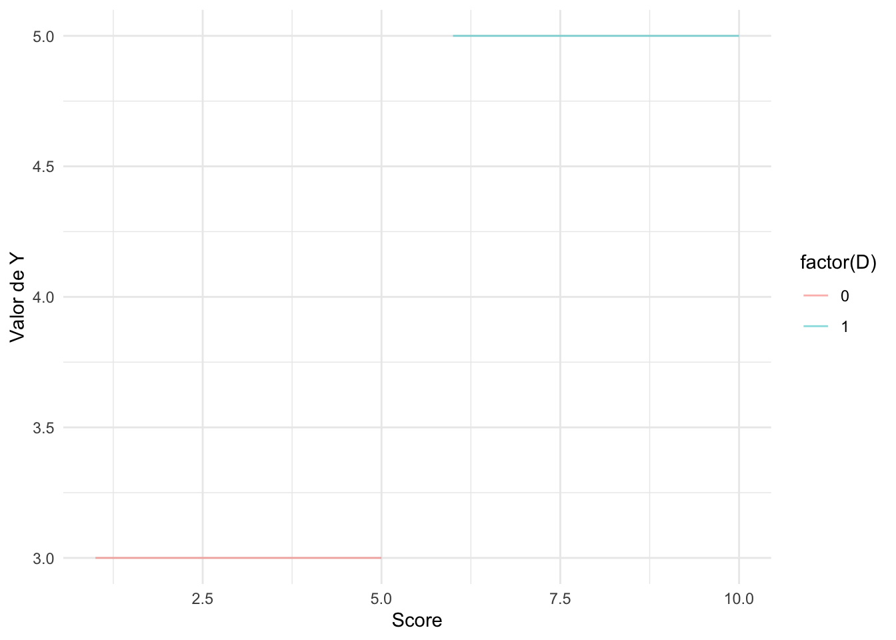

── Attaching core tidyverse packages ──────────────────────── tidyverse 2.0.0 ──
✔ dplyr 1.1.3 ✔ readr 2.1.4
✔ forcats 1.0.0 ✔ stringr 1.5.0
✔ ggplot2 3.4.3 ✔ tibble 3.2.1
✔ lubridate 1.9.2 ✔ tidyr 1.3.0
✔ purrr 1.0.2
── Conflicts ────────────────────────────────────────── tidyverse_conflicts() ──
✖ dplyr::filter() masks stats::filter()
✖ dplyr::lag() masks stats::lag()
ℹ Use the conflicted package (<http://conflicted.r-lib.org/>) to force all conflicts to become errors
library(stargazer)
Please cite as:
Hlavac, Marek (2022). stargazer: Well-Formatted Regression and Summary Statistics Tables.
R package version 5.2.3. https://CRAN.R-project.org/package=stargazer
library(tidysynth)
Resultados potenciales
El problema de evaluación consiste en medir el impacto del programa (o tratamiento) sobre un conjunto de variables de resultado en un conjunto de individuos. Por ejempmlo, el efecto que tiene un programa de nutrición en los indicadores antropométricos. Se busca establecer la diferencia entre la variable de resultado del individuo participante en el programa en presencia del programa y la variable de resultado de ese individuo en ausencia del programa. Esta diferencia es lo que se conoce como efecto del tratamiento o programa.
El problema fundamental de la evaluación de impacto es que no podemos ver ambos resultados en el mismo individuo.
El marco teórico estándar para formalizar el problema de la evaluación de impacto se basa en el modelo de resultado potencial. Formalmente, se puede definir el indicador de tratamiento como \(D_i\). En un escenario de tratamiento binario (recibe o no recibe), \(D_i=1\) si lo recibe y \(D_i=0\) si no lo recibe. Las variables de resultado se pueden definir como \(Y_i(D_i)\) para cada individuo \(i=1,...,N\). Es decir, \(Y_i(1)\) es la variable de resultado si el individuo \(i\) es tratado y \(Y_i(0)\) es la variable de resultado si el individuo \(i\) no es tratado. El efecto del tratamiento para un individuo \(i\) se puede escribir como:
\[\tau_i=Y_i(1)-Y_i(0)\] Volviendo al problema fundamental de la evaluación de impacto se tendrá un resultado excluyente
\[Y_i=D_iY_i(1)+(1-D_i)Y_i(0)=\begin{cases}
Y_i(1) &\text{ si }D_i=1\\
Y_i(0) &\text{ si }D_i=0
\end{cases}\]
Debido a que uno de los dos resultados no se puede observar, debemos concentrarnos en el impacto promedio, el efecto medio de tratamiento o ATE:
\[\tau_{ATE}=\mathbb{E}(\tau_i)=\mathbb{E}[Y_i(1)-Y_i(0)]\] Una representación simple a través de una regresión lineal de esto puede ser de la forma
\[Y_i=\beta_0+\tau_iD_i + u_i\] En la mayoría de los casos, el tratamiento o programa no es universal sino que sólo está disponible para un subconjunto de la polbación, generalmente porque el programa ha sido focalizado. En este caso, es posible utilizar un estimador que únicamente promedie el efecto sobre la población elegible. Se puede utilizar el impacto sobre los tratados o ATT:
\[\tau_{ATT}=\mathbb{E}[\tau_i|D_i=1]=\mathbb{E}[Y_i(1)|D_i=1]-\mathbb{E}[Y_i(0)|D_i=1]\] El primer término es el valor esperado de resultado en el grupo de tratamiento en presencia del tratamiento y el segundo que se conoce como resultado contrafactual, es el valor esperado de la variable resultado en el grupo de tratamiento en ausencia del tratamiento. Esto puede hacerse también pero con aquellos que no son tratados o ATU:
\[\tau_{ATU}=\mathbb{E}[\tau_i|D_i=0]=\mathbb{E}[Y_i(1)|D_i=0]-\mathbb{E}[Y_i(0)|D_i=0]\] En cualquiera de los casos es necesario escoger una aproximación plausible del contrafactual. Si nos enfocamos en \(\tau_{ATT}\), una aproximación plausible para \(\mathbb{E}[Y_i(0)|D_i=1]\) puede ser el grupo de control \(\mathbb{E}[Y_i(0)|D_i=0]\). Esta comparación podría generar estimaciones inexactas ya que los participantes y no participantes del programa suelen ser diferentes incluso en ausencia del programa. Este problema se conoce como sesgo de selección. Se tiene la siguiente comparación entre participantes y no participantes:
\[\mathbb{E}[Y_i(1)|D_i=1]-\mathbb{E}[Y_i(0)|D_i=0]\] Y se tiene el \(\tau_{ATT}\)\[\tau_{ATT}=\mathbb{E}[Y_i(1)|D_i=1]-\mathbb{E}[Y_i(0)|D_i=1]\]\[\tau_{ATT}+\mathbb{E}[Y_i(0)|D_i=1]=\mathbb{E}[Y_i(1)|D_i=1]\] Si se resta a ambos lados \(\mathbb{E}[Y_i(0)|D_i=0]\) se tiene
\[\tau_{ATT}+\mathbb{E}[Y_i(0)|D_i=1]-\mathbb{E}[Y_i(0)|D_i=0]=\mathbb{E}[Y_i(1)|D_i=1]-\mathbb{E}[Y_i(0)|D_i=0]\] Y se deriva que la aproximación del \(\tau_{ATT}\), \(\mathbb{E}[Y_i(1)|D_i=1]-\mathbb{E}[Y_i(0)|D_i=0]\) se puede utilizar si y solo si \(\mathbb{E}[Y_i(0)|D_i=1]-\mathbb{E}[Y_i(0)|D_i=0]=0\).
En este caso
\[\tau_{ATT}=\mathbb{E}[Y_i(1)|D_i=1]-\mathbb{E}[Y_i(0)|D_i=0]\] El estimador vendría dado por el análogo muestral
\[\hat{\tau}_{ATT}=(\bar{Y}|D_i=1)-(\bar{Y}|D_i=0)\] El estimador del efecto del programa bajo el supuesto de que no existe sesgo de selección resulta de comaprar el promedio muestral de \(Y\) en el grupo de tratamiento con el promedio muestral de \(Y\) en el grupo de control. Esta comparación de medias se puede implementar fácilmente por el método de regresión de la siguiente manera
\[Y_i=\beta_0+\beta_1D_i+u_i\] La participación en el programa es independiente de las características del individuo, por tanto
\[\mathbb{E}[u_i|D_i]=0\] Esto se conoce como el supuesto de independencia condicional. Bajo este supuesto el estimador de MCO es consistente e insesgado.
\[\mathbb{E}[Y_i(1)|D_i=1]=\mathbb{E}[\beta_0+\beta_1+u_i|D_i=1]=\beta_0+\beta_1\]\[\mathbb{E}[Y_i(1)|D_i=0]=\mathbb{E}[\beta_0+u_i|D_i=1]=\beta_0\] El estimador de \(\beta_1\) vendría dado por
\[\hat{\beta}_1=(\bar{Y}|D_i=1)-(\bar{Y}|D_i=0)\]
Regresión discontinua
Simulación de datos
dat <-tibble(x =rnorm(1000, 50, 25)) |>mutate (x =if_else(x <0, 0, x) ) |>filter(x <100)dat <- dat |>mutate(D =if_else(x >50, 1, 0),y1 =25+0* D +1.5* x+rnorm(n(), 0, 20))ggplot(aes(x, y1, colour=factor(D)), data = dat) +geom_point(alpha =0.5) +geom_vline(xintercept =50, colour ="grey", linetype=2) +stat_smooth(method ="lm", se = F) +labs(x ="Test score (X)", y ="Potential Outcome (Y1)")
`geom_smooth()` using formula = 'y ~ x'

Simulación de discontinuidad
dat <- dat |>mutate(y2 =25+40* D +1.5* x +rnorm(n(), 0, 20) )ggplot(aes(x, y2, colour =factor(D)), data = dat) +geom_point(alpha =0.5) +geom_vline(xintercept =50, colour ="grey", linetype =2) +stat_smooth(method ="lm", se = F) +labs(x ="Test score (X)", y ="Potential outcome (Y)")
ggplot(aes(x, y3, colour=factor(D)), data = dat) +geom_point(alpha =0.2) +geom_vline(xintercept =140, colour ="grey", linetype =2) +stat_smooth(method ="lm", se = F) +labs(x ="Test score (X)", y ="Potential Outcome (Y)")
`geom_smooth()` using formula = 'y ~ x'
Identificación
Supuestos
Estimación
Ejemplos
Bibliografía
Thistelhwaite, Campbell (1960)
Van Der Klaauw (2002)
Cook (2008)
Angrist, Lavy (1999)
Black (1999)
Hahn (2001)
Hansen (2015)
Hoekstra (2009)
Card (2008)
Almond et al (2010)
Barreca (2011)
Jacob, Lefgen (2004)
Diferencias en diferencias
Control sintético
Este método provee de ventajas sustanciales como diseño de investigación en las ciencias sociales.
“arguably the most important innovation in the policy evaluation literature in the last 14 years” (Athey and Imbens, 2017)
Considere un problema en donde una unidad agregada, como una ciudad o un departamento, es expuesto a un evento o intervención de interés (programa de control de tabaco en California (Abadie et. al, 2010) o efecto de un programa educativo en el distrito educativo de Syracuse, New York (Bifulco et. al, 2017)). La mayoría de las técnicas de análisis de regresión requieren de muestras grandes y muchas observaciones. Los economistas han empleado métodos provenientes de las series de tiempo y estudios comparativos para entender los efectos sobre grandes agregados. No obstante, esto permite observar los efectos de shocks en el corto plazo (impulso respuesta), más no permite observar los efectos de largo plazo.
El método de control sintético se basa en la idea de que, cuando las unidades de observación son un número pequeño de unidades agregadas, una combinación de las unidades no afectas por el tratamiento puede proveer una mejor comparación que cualquier unidad no afectada por sí sola.
The setting
Se tienen datos para \(J + 1\) unidades.
La primera unidad \(j=1\) es la unidad tratada y el resto son unidades no tratadas, y se consideran el “pool de donantes”.
Los datos se expanden por \(T\) periodos y los primeros periodos \(T_0\) son pre-tratamiento.
Para cada unidad \(j\) se observa tanto la variable de interés \(Y_{jt}\) como las variables predictoras \(X_{1j},...,X_{kj}\).
Estas variables predictoras no son afectadas por la intervención.
Los vectores de tamaño \(k\times 1\)\(\mathbf{X}_1,...,\mathbf{X}_{J+1}\) contienen los valores de llos predictores para las unidades \(j=1,...,J+1\).
Se tiene la siguiente matriz que contiene los valores de los predictores para las \(J\) unidades no tratadas: \[
\mathbf{X}_0=[\mathbf{X}_2...\mathbf{X}_{J+1}]
\]
Para cada una de las unidades \(j\) y periodo de tiempo \(t\), se tiene \(Y_{tj}^N\), el resultado potencial sin intervención. Para la unidad afectada por la intervención \(j=1\), y periodo post-tratamiento, \(t>T_0\), se define a \(Y_{1t}^I\) como el resultado potencial bajo la intervención. El efecto del tratamiento de interés para la unidad afectada en el periodo \(t\) (con \(t>T_0\)) es:
\[
\tau_{1t}=Y_{1t}^I-Y_{1t}^N
\] Debido a que la unidad \(j=1\) es expuesta al tratamiento después del periodo \(T_0\), para \(t>T_0\) se tiene que \(Y_{1t}=Y_{1t}^I\).
El reto está en estimar \(Y_{1t}^N\) para \(t>T_0\): cómo el resultado de interés habría evolucionado para la unidad afectada en ausencia del tratamiento. Esto es el resultado contrafactual. El efecto cambia en el tiempo.
Estimación
Usualmente, para estimar \(Y_{1t}^N\) se intenta reproducir a partir de una o varias unidades no afectas por el tratamiento con características similares a la unidad afectada al momento de la intervención. Cuando los datos consisten de pocas unidades, esto se puede tornar difícil. El control sintético entra a resolver el problema partiendo de la idea de que una combinación de unidades del pool de donantes puede aproximarse mejor a las características de la unidad afectada sustancialmente mejor que cualquier unidad no afectada. Un control sintético es definido como un promedio ponderado de las unidades en el pool de donantes.
smoking_out <- smoking %>%# initial the synthetic control objectsynthetic_control(outcome = cigsale, # outcomeunit = state, # unit index in the panel datatime = year, # time index in the panel datai_unit ="California", # unit where the intervention occurredi_time =1988, # time period when the intervention occurredgenerate_placebos=T # generate placebo synthetic controls (for inference) ) %>%# Generate the aggregate predictors used to fit the weights# average log income, retail price of cigarettes, and proportion of the# population between 15 and 24 years of age from 1980 - 1988generate_predictor(time_window =1980:1988,ln_income =mean(lnincome, na.rm = T),ret_price =mean(retprice, na.rm = T),youth =mean(age15to24, na.rm = T)) %>%# average beer consumption in the donor pool from 1984 - 1988generate_predictor(time_window =1984:1988,beer_sales =mean(beer, na.rm = T)) %>%# Lagged cigarette sales generate_predictor(time_window =1975,cigsale_1975 = cigsale) %>%generate_predictor(time_window =1980,cigsale_1980 = cigsale) %>%generate_predictor(time_window =1988,cigsale_1988 = cigsale) %>%# Generate the fitted weights for the synthetic controlgenerate_weights(optimization_window =1970:1988, # time to use in the optimization taskmargin_ipop = .02,sigf_ipop =7,bound_ipop =6# optimizer options ) %>%# Generate the synthetic controlgenerate_control()